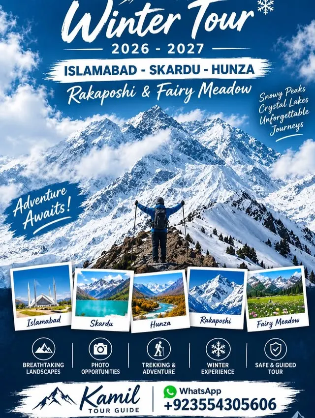
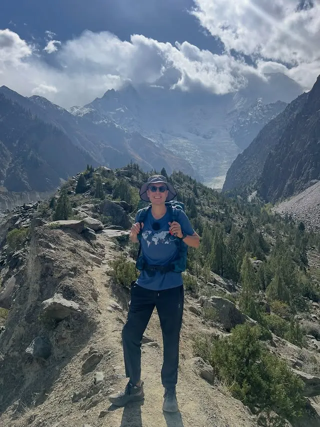
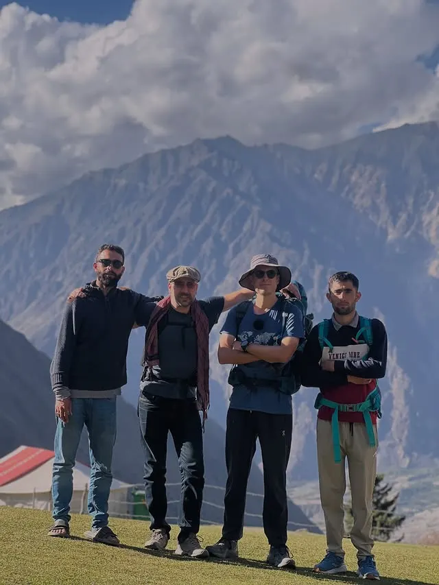
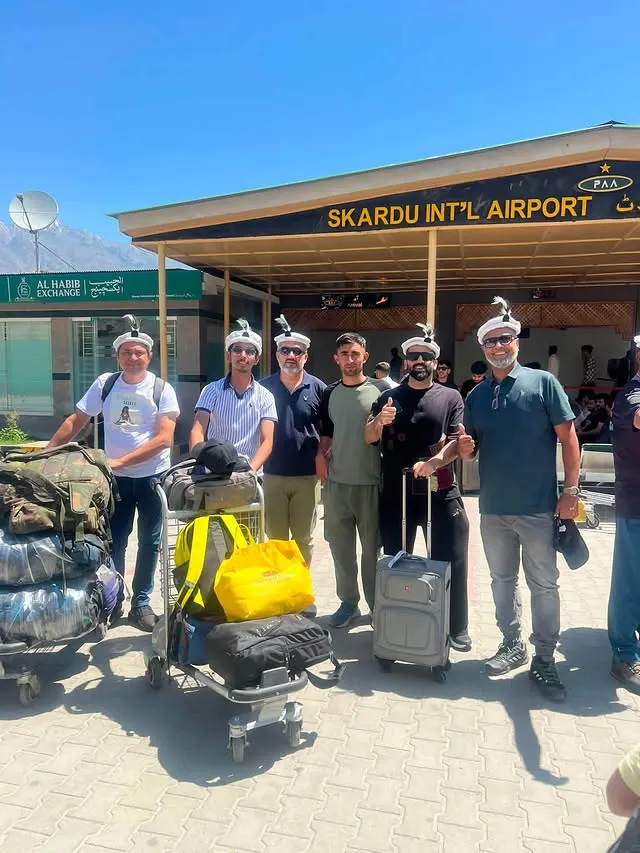
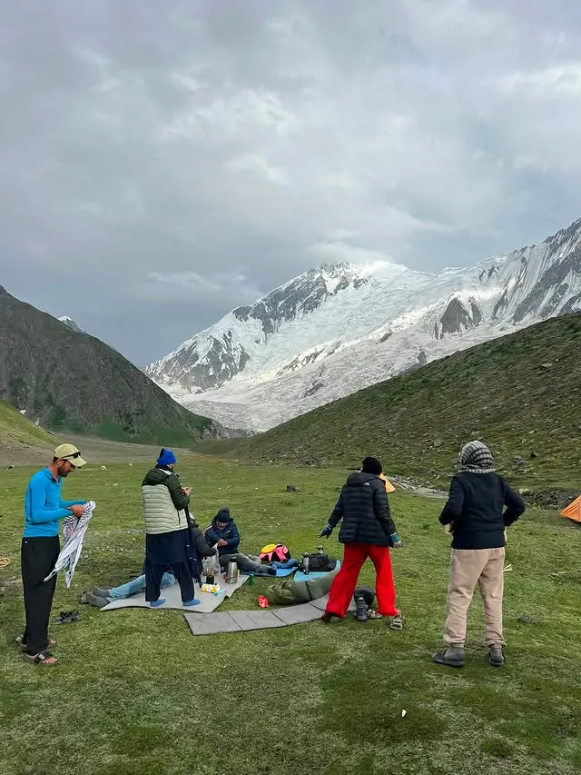
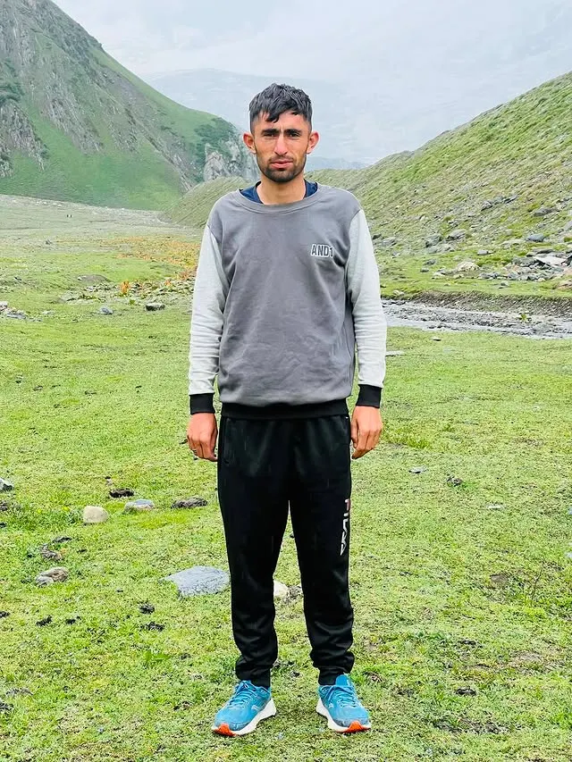

Northern Pakistan · Winter Tour 2026–2027 · Bookings open
The north, with a guide who calls it home.
Customized tours and treks through Hunza, Skardu, Rakaposhi and Fairy Meadow — transport, hotel arrangements and professional guidance, planned around you.

Treks & tours
Trips run from Islamabad into the mountains of Gilgit-Baltistan. Two routes guests ask for most:
Rakaposhi & Diran Base Camp Trek
4 days / 3 nights from Minapin Village in Nagar Valley, walking toward Rakaposhi and Diran base camps in the Karakoram.
Winter Tour 2026–2027
Islamabad, Skardu, Hunza, Rakaposhi and Fairy Meadow — a customized winter itinerary with transport and hotels arranged.
Customized itineraries
Family, group or solo — tell Kamil where you want to go and he plans the route, stays and pace around you.
From recent trips
Photos from Kamil's own Instagram — guests, trails and mountain country.





Guided by a local
Kamil guides in Hunza and Nagar Valley, where the treks begin. Recent guests have travelled from Belgium and Spain — including a visit to Pissan's famous Natural Cricket Ground before the Rakaposhi Base Camp Trek — and from Karachi to Diran Base Camp. You travel with someone who knows the trails, the villages and the weather, not a call centre.
Book this experience
Bookings are taken through Instagram DM and WhatsApp — use the links in Kamil Tour Guide's Instagram bio to ask for a customized itinerary and quotation. Nothing here is booked automatically; every trip is planned with you first.